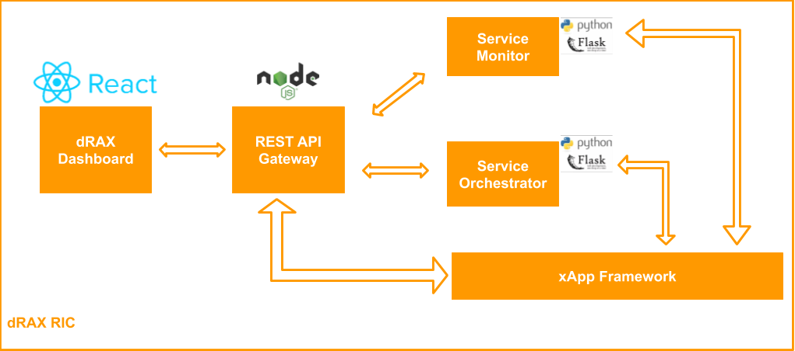

15. xApps Lifecycle In-depth⚓︎
In this section we will explain the lifecycle of the xApps in the RIC.
|  |
| Figure: dRAX RIC and xApp interactions |
15.1 Service Monitor and Service Orchestrator roles⚓︎
Part of the dRAX RIC are the Service Monitor and Service Orchestrator which play a key role in the xApp lifecycle management.
15.1.1 Service Orchestrator⚓︎
The Service Orchestrator is a service of the dRAX RIC which has a number of tools at its disposal. It contains a Kubernetes client as well as a Helm client, enabling it to deploy Kubernetes resources. It is exposed through the dRAX RIC API Gateway on endpoint with two methods (POST to deploy an xApp or DELETE to delete an xApp):
- /deployment/xapp
Details on the endpoint can be found on the dRAX RIC API Gateway Swagger page:
http://<kubernets_ip>:31315/api/v1/docs
Just substitute >kubernetes_ip< with the advertise address of your Kubernetes cluster.
The Service Orchestrator supports multiple deployment options:
- Using a local Helm chart package
- Using a remote Helm repository
In both cases, you can also send the optional values.yaml file with specific xApp configuration options.
15.1.2 Service Monitor⚓︎
The Service Monitor is equipped with the Kubernetes client, so it's able to monitor all the deployed resources. Therefore the Service Monitor is used for:
- xApp discovery
- Retrieving relevant configuration options of dRAX RIC resources, such as services, ports, etc.
15.2 Onboarding⚓︎
There are 2 ways of onboarding an xApp:
- Through the dRAX Dashboard
- By using the Service Orchestrator endpoint via the dRAX RIC API Gateway
15.2.1 Using the dRAX Dashboard⚓︎
Go to the dRAX dashboard, which by default is on port 31315:
http://<kubernetes_ip>:31315
On the left side, navigate to New deployments -> xApp deployment. On the next page you should see a Deploy new xApp button. After clicking the button you will land on the xApp deployment page. Here you need to specify the xApp metadata, such as:
- xApp name
- Organization that made the xApp
- Team inside the organization
- Version of the xApp
- Owner of the xApp
Next, you specify the “Deploy Method”. Here you can choose:
- Upload Helm Chart - To upload a packaged Helm chart .tgz file
- Remote Helm Repository - To specify a Helm repository from which to deploy the xApp
If you select “Upload Helm Chart”, you will get the option to:
- Upload the Helm Chart package .tgz file
- Upload the optional values.yaml file for the Helm Chart
NOTE: The Service Orchestrator automatically knows the Kubernetes advertise address used in its Kubernetes cluster, hence it will automatically populate this field in the xApps values.yaml file. You do not need to provide a separate values.yaml for this, hence the deployment procedure is simple. Of course, if on deployment time you need to change other parameters in the values.yaml (such as changing the default configuration options etc.) you can supply the values.yaml file.
If you select “Remote Helm Repository”, you will need to fill in a few more fields:
- Repository name - A generic name of your choice
- Repository URL - The URL where the Helm Chart repository is located
- Chart name - the name of the Helm Chart in the repository where the xApp is located
- An option to also upload a values.yaml file
Once the details are filled in, click “Submit”, and your xApp will be deployed.
15.2.2 Using the Service Orchestrator endpoint via the dRAX RIC API Gateway⚓︎
As described before, we use the Service Orchestrator to deploy the dRAX RIC xApps. The method described before, using the dRAX Dashboard, also in the background uses the Service Orchestrator. Therefore, you may also choose to deploy an xApp directly using the Service Orchestrator by using its API endpoint via the dRAX RIC API Gateway. Details on the contents of the API are on the dRAX RIC API Gateway Swagger:
http://<kubernets_ip>:31315/api/v1/docs
Just substitute <kubernetes_ip> with the advertise address of your Kubernetes cluster.
You again have the possibility to either:
- deploy using a helm chart package .tgz file
- Deploy from a remote Helm Chart repository
Deploying an xApp using a local Helm chart tgz package file can be done using the curl command like this:
curl -X POST "http://10.55.1.2:31315/api/deployment/xapp" -H "accept: application/json" -H "Content-Type: multipart/form-data" -F 'xAppForm={"xAppName":"example-xapp","organization":"Accelleran","team":"dRAX","version":"0.1.0","owner":"Owner","method":"Upload Helm Chart","namespace":"default"}' -F "file=@/home/ad/xapp-training-course/xapp-0.1.0.tgz;type=application/x-compressed-tar" -F "values=@/home/ad/xapp-training-course/values.yaml;type=application/x-yaml"
Deploying an xApp using a remote Helm chart repository can be done using the curl command as an example:
curl -X POST "http://10.55.1.2:31315/api/deployment/xapp" -H "accept: application/json, text/plain, */*" -H "Content-Type: multipart/form-data" -F 'xAppForm={"xAppName":"example-xapp","organization":"Accelleran","team":"dRAX","version":"0.1.0","owner":"Owner","method":"Remote Helm Repository","chartName":"xapp-hello-world","url":"https://accelleran.github.io/xapp-hello-world/","repoName":"example-repo-name","namespace":"default"}' -F "values=@/home/dimitris/Desktop/5g_logs/values.yaml;type=application/x-yaml"
The following information is of interest:
- 10.55.1.2 - Is the Kubernetes IP
- example-xapp - is the xApp name
- Accelleran - is the organisation
- dRAX - is the team
- 0.1.0 - is the version of the xApp
- Owner - the owner of the xApp
- Upload Helm Chart/Remote Helm Repository - specifies whether we are uploading a helm .tgz package or using a remote Helm repository
-
If a .tgz helm package file is used, then
specifies the the .tgz helm package and its location**-F "file=@/home/ad/xapp-training-course/xapp-0.1.0.tgz;type=application/x-compressed-tar" ** -
If a remote helm repository is used, then https://accelleran.github.io/xapp-hello-world/ is the URL to the remote repository
- If a remote helm repository is used, then xapp-hello-world is the name of the helm chart in the remote repository
- If a remote helm repository is used, then example-repo-name is the generic name used to save the repository URL in helm
- Finally,
specifies the optional values.yaml file and its location
**-F “values=@/home/dimitris/Desktop/5g_logs/values.yaml;type=application/x-yaml"**
15.3 Discovery⚓︎
Once the xApp is deployed, the dRAX Service Monitor automatically registers the xApp as deployed using predefined labels in the xApp Kubernetes objects. This information is gathered by the dRAX RIC API Gateway and is used by the dRAX Dashboard where the new xApp appears in the xApps Management tab. From here, the user can control and configure the xApp.
A user can also get this information programmatically via the dRAX RIC API Gateway. Endpoints are available to:
- Get the xApps list with all the deployed xApps
- Get the configuration of an xApp
- Check the health of an xApp
Details are available on the dRAX RIC API Gateway Swagger:
http://<kubernets_ip>:31315/api/v1/docs
Just substitute ≶kubernetes_ip> with the advertise address of your Kubernetes cluster.
15.4 Configuration⚓︎
Details on how the xApps are configured can be found in the xApp Configuration In-depth section. Here we summarize that the xApp can be configured:
- On deployment time using the xApp Helm Chart values.yaml file
- During runtime through the dRAX Dashboard
- During runtime through the xApps’ API, which can be reached through the dRAX RIC API Gateway
The configuration description can be found in the xApp Configuration In-depth section.
15.5 Uninstallation⚓︎
Uninstalling an xApp in the dRAX RIC can be done in 2 ways:
- Using the dRAX Dashboard
- Using the service Orchestrator API via the dRAX RIC API Gateway
If you are using the dRAX Dashboard, you can simply go to the xApps Management tab on the left side of the dashboard. From here you can see the xApp list of currently deployed xApp. For each xApp, you can see an “Uninstall” button, which if you click will uninstall the xApp.
On the other hand, you can also reach the /deployment/xapp endpoint on the dRAX RIC API Gateway and use the DELETE method to delete an xApp. Details for the endpoint are available on the dRAX RIC API Gateway Swagger:
http://<kubernets_ip>:31315/api/v1/docs
Just substitute <kubernetes_ip> with the advertise address of your Kubernetes cluster.
An example of how to use delete an xApp using the API Gateway can be seen below:
curl -X DELETE -H "accept: application/json" -H "Content-Type: application/json" -d '{"name":"accelleran-drax-example-xapp-010", "namespace":"default"}' http://10.55.1.2:31315/api/deployment/xapp
Here we use the curl command to reach the API endpoint, and use the following parameters:
- accelleran-drax-example-xapp-010 - This is the name of the xApp
- default - This is the namespace where the xApp is deployed
- 10.55.1.2 - This is an example Kubernetes advertise IP